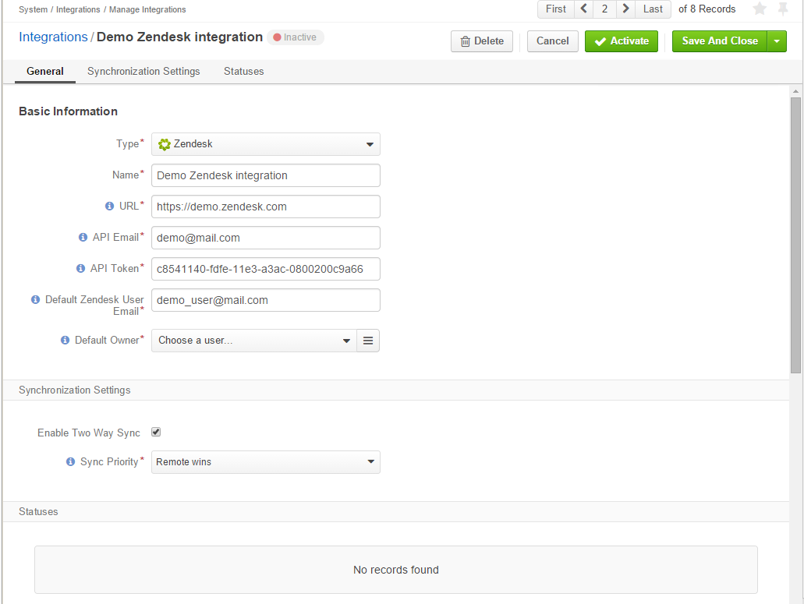
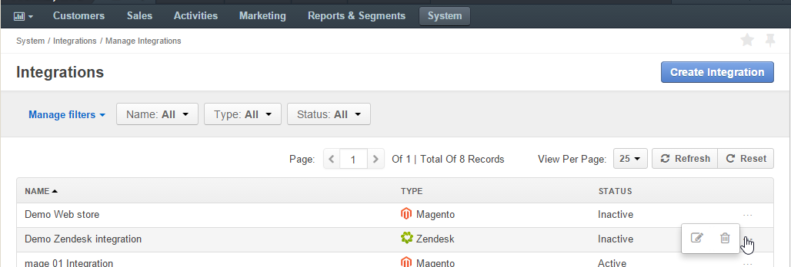

Integration with Zendesk¶
OroCRM supports out of the box integration with Zendesk, allowing you to load data from your Zendesk account and process it in OroCRM. This article describes how to define and edit the integration and synchronization settings.
Hint
While Zendesk integration capabilities are pre-implemented, OroCRM can be integrated with different third-party systems.
On the Zendesk Side¶
The only thing you will need from Zendesk is your API token.
- Open your account and go to the Admin page.
- Go to the CHANNELS>API.
- Make sure the Token Access is enabled.
- Copy an active API token.
On the Oro Side¶
Create Zendesk Integration¶
Go to the System > Integrations > Manage Integrations, and click the Create Integration button.
The Create Integration form will appear.
- As soon as you set the integration type to Zendesk, the form is recalculated to meet specific integration
- requirements.
General¶
Define the following mandatory details in the General section:
| Field | Description |
|---|---|
| Type* | The integration type. Must be set to Zendesk |
| Name* | The integration name used to refer to the integration within the system. |
| URL* | A URL of your Zendesk account (e.g. https://username.zendesk.com). |
| API Email* | The email used to register your Zendesk account. |
| API Token* | The API token generated and/or copied in the Zendesk (as described above). |
| Default Zendesk User Email | User with this email will be assigned tickets that come from OroCRM and for which there are no Zendesk users with a matching email address. |
| Owner | Limits the list of users that can manage the integration, subject to the access and permission settings etc.) Used as an OroCRM user for Zendesk tickets if there are no users with a matching email address. |
Synchronization Settings¶
Use the Synchronization Settings section to enable/ disable two way synchronization.
Select the Enable Two Way Sync check box, if you want to download data both from Zendesk to OroCRM and back. If the box is left unchecked, data from Zendesk will be loaded into OroCRM, but changes performed in OroCRM will not be loaded into Zendesk.
If two-way synchronization is enabled, define the priority used for the conflict resolution (e.g. if the same customer details were edited from the both OroCRM and Zendesk):
- Remote wins—Zendesk data will be applied to both Zendesk and OroCRM.
- Local wins—OroCRM data will be applied to both Zendesk and OroCRM.
For example we have created a ‘Demo Zendesk Integration’ with two-way synchronization enabled. In this integration you have set that if the same data is changed from both Zendesk and OroCRM, the Zendesk changes will take precedence.
Activate the Integration¶
Initially the integration is inactive. In order to activate it, click the Activate button on the integration view page.
Edit the Integration¶
All the integrations created will be available in the Integrations grid (System > Integrations > Manage Integrations. You can delete or edit the integration details.
Synchronization¶
Start Synchronization¶
Once integration has been created, the data will be automatically synchronized. However, you can also start the synchronization manually from OroCRM:
- Go to the System>Integrations>Manage Integrations, and click the
 Reset button.
Reset button. - Alternatively, go to the integration view page, and click the Schedule Sync button. A sync job has been added to the queue. Check progress. note will appear.
The data is now being synchronized. You can click the Check progress link to see the synchronization status.
Synchronization Process¶
First Synchronization from Zendesk to OroCRM¶
A new OroCRM case is created for every Zendesk ticket. The ticket fields are mapped at the OroCRM case fields as follows:
| Zendesk Field | OroCRM case field | Comments | ||||||||||
|---|---|---|---|---|---|---|---|---|---|---|---|---|
| Subject | Subject | Can be used to find the ticket/case in the grid | ||||||||||
| Description | Description | Is also added as the first public comment for both the OroCRM case and the Zendesk ticket | ||||||||||
| Assignee | Assigned to | The email address of the assignee is checked against primary emails of OroCRM User records:
|
||||||||||
| Priority | Priority | The values are mapped as follows:
|
||||||||||
| Status | Status | The values are mapped as follows:
|
For each case created as a result of synchronization with Zendesk, a ticket is created in OroCRM. The following field values are defined as follows:
| OroCRM Ticket Field | Description |
|---|---|
| Ticket Number | Zendesk ticket number. Used to determine if an existing case/ticket must be updated or if a new one must be created. |
| Recipients Email | Same as the Recipients Email field in the Zendesk ticket. |
| Status | Same as the Status field in the Zendesk ticket.(Does not map to the OroCRM statuses). |
| Type | Same as the Type field in the Zendesk ticket. |
| Submitter | A contact or user. There are two possible cases:
|
| Assignee | The email address of the assignee is checked against primary emails of OroCRM User records:
|
| Requester | An OroCRM Contact record is tied to it, as follows:
|
| Priority | Same as the Priority field of the Zendesk ticket (Does not map to the OroCRM priorities). |
| Problem | Same as the Problem field in the Zendesk ticket. |
| Collaborators | Same as the Collaborators field in the Zendesk ticket. |
Synchronization from OroCRM to Zendesk¶
If two-way synchronization is enabled, Publish to Zendesk will be available in the Case view page. Click the button and the case will be submitted to Zendesk.
The case fields are mapped to the Zendesk ticket fields as follows:
| OroCRM case field | Zendesk field | Comments | ||||||||||
|---|---|---|---|---|---|---|---|---|---|---|---|---|
| Subject | Subject | Can be used to find the ticket/case in the grid | ||||||||||
| Description | Description | Is also added as the first public comment for the both OroCRM case and Zendesk ticket | ||||||||||
| Assigned to | Assignee | The email address of the Assigned to user is checked against the emails of Zendesk users:
|
||||||||||
| Priority | Priority | The values are mapped as follows:
|
||||||||||
| Status | Status | The values are mapped as follows:
|
- After the ticket has been created in Zendesk, its details are saved in the Ticket related to the case in OroCRM.
Further Synchronizations¶
- If some ticket details of a Zendesk ticket have been changed after the initial synchronization, the corresponding OroCRM case details will also be updated in the course of the nearest synchronization.
- If some ticket details of an OroCRM case have been changed after the initial synchronization, the corresponding Zendesk ticket details will also be updated automatically (if the two-way synchronization is enabled).
- If the same details have been updated in a related Zendesk ticket and OroCRM case, and the two-way synchronization is enabled, the synchronization priority settings will be applied.